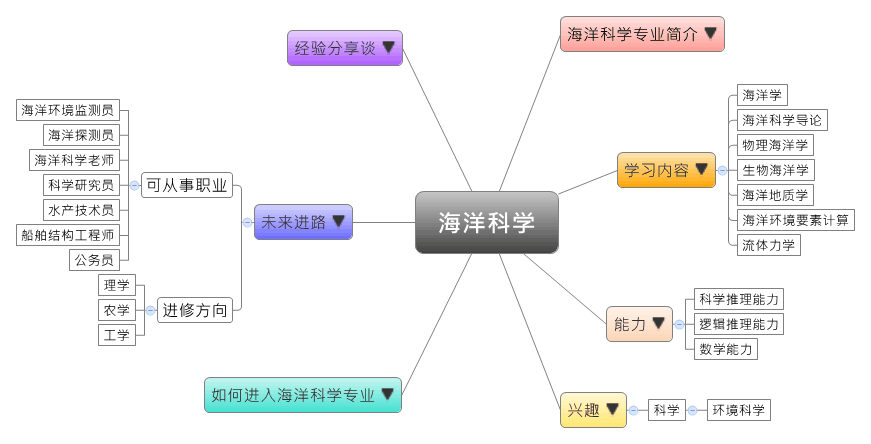
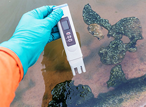

- 专业大观园
-

- 专业介绍
-
什么是海洋科学专业？
在生活中，海水占地球表面积的七成以上，所以海洋与我们的生活息息相关，我们不仅到海边戏水消暑，也要关心海洋污染、海洋生物滥捕、海洋生态资源枯竭等生活议题。海洋科学是研究海洋的自然现象、性质、变化规律，以及海洋知识的实务应用,是一门综合性的学科。随着我国在海底石油、天然气勘测等海洋资源的运用，海洋科学专业的需求大增，此专业的毕业生就业前景良好,在职场上就业选择多元，可选择科学研究、海洋生态保育、海洋生物医学、水产养殖研究、海洋捕捞、天然资源探勘、海上运输、海洋事务管理等方向。
海洋科学专业除了培养学生具备海洋科学，以及相关分支学科－物理海洋学、海洋生物学、海洋化学、海洋地质学等的理论与知识，并通过海洋科学的调查方法和观测技术的训练，让学生具备从事海洋调查和海洋科学相关领域研究的基本能力。
 海洋水文资料分析－水质检测 
海洋调查－参观海洋研究潜水艇运作
- 学习内容
-
海洋科学专业学生主要学习与海洋科学相关领域的基本理论与知识，同时也须接受基本的理学专业，如数学、物理、化学的训练。海洋科学专业相当注重实务应用的能力，所以学生须接受海洋研究、海洋调查等实务操作的专业训练。
本专业学习方向通常分为三类：海洋学类、生物学类和地质学类；也有学校进一步开设海洋调查或观测技术等课程，为学生未来就业做好准备。海洋科学专业主干课程有：海洋学、海洋科学导论、物理海洋学、生物海洋学、地质学、海洋地质学、海洋环境要素计算、流体力学……等。此外，学生须加选一门以上的实践性教学课程，如：海洋学实习、出海实习进行选修。
本专业可以习得的知识与获得之能力、技能列点：第一，具备海洋调查和海洋科学研究的理论与实作能力；第二，具有从事海洋资源开发、海洋环境监测，以及海洋资源管理工作的经验与能力；第三，掌握全球海洋科学领域的最新发展动向，以及运用现代信息技术获取海洋信息。
- 能力
-
海洋科学专业学生，需具备以下能力：
相关性向能力 说明 科学推理能力  具备海洋观测技术的能力
具备海洋观测技术的能力
具有从事海洋调查研究的能力
能推测并引导国际海洋科学研究的发展动向逻辑推理能力 具备批判与独立思考的能力
了解海洋生态、资源运用的因果关系
能够提出解决海洋资源耗竭的方法并进行验证数学能力 有数学推导的能力
能通过统计分析来解读海洋信息的能力
- 兴趣
-
若你对下列活动或事物有高度兴趣，可考虑进入海洋科学专业学习：
科学 环境科学 关心海洋生态保育等事务
对事物充满好奇并喜爱追根究底
喜欢接触大自然，尤其对海洋有好奇心
- 如何进入此专业
-
下面列举开设海洋科学专业的211工程重点大学院校：
- 未来进路
-
可从事职业
海洋科学专业在面对陆地资源一步步枯竭的今天，逐渐成为一门热门的专业，毕业生的就业前景越来越好，且学生毕业后就业的选择也相当多元。海洋资源调查与开发、海洋环境监测、海洋资源管理、海洋探测、海洋信息处理技术等领域都很适合海洋科学专业的毕业生。在工作职场上皆能发挥海洋研究与调查、观测分析等专长：
行业 职业 教育、科学研究与
技术服务业海洋环境监测员、海洋探测员、海洋科学老师、科学研究员 生态保护和环境治理业 海洋环境监测员、海洋探测员、科学研究员 渔业、水上运输业、
装卸搬运和运输代理业水产技术员、管线工程师、船舶结构工程师 国家机构（海事局） 公务员 进修方向以下列举海洋科学专业毕业生可以继续修读之学科门类、一级学科与硕士点：
学科门类 一级学科 硕士点 理学 海洋科学物理海洋学、海洋生物学、海洋地质、应用海洋学、海洋生物技术、海洋资源与权益综合管理、海洋地球化学、海洋探测技术 生物学生物学、水生生物学 地质学水文地质学 农学 水产水产养殖、捕捞学、渔业资源、水产动物营养与饲料、渔业环境保护与治理 工学 水利工程水利工程、水文学及水资源、港口、海岸及近海工程 工程（专业硕士）地质工程、石油与天然气工程、船舶与海洋工程 地质资源与地质工程地下水科学与工程
- 经验分享谈
-
关心青年教师和学生的海洋科学博士生导师——周应祺
1979年，周应祺教授作为我国改革开放以来向西方科技先进国家派出的第一批科技人员。1993年11月他出席在美国华盛顿召开的中白令海峡鳕渔业第9次会议，并到美国国务院参加中美渔业合作条约签约仪式。在招待会上，我成功地向美国海岸警卫队司令提议并协商安排我国渔政官员到美国海岸警卫队实习访问的事项，解决了在公海登临执法与国家主权的矛盾，被美国誉为“中美公海联合合作执法的里程碑”。
在周应祺教授共出访国外的77次中，22次应国际组织或国外政府邀请，出席联合国等组织的专家咨询会议，撰写渔业管理方面的技术文件。19次代表中国科学家参与政府间双边会谈或国际渔业组织的公约、管理措施制订等活动；参与历时十多年的中白令海峡鳕渔业资源养护和管理公约的磋商，筹建南太平洋渔业国际管理组织等。
周应祺教授关心青年教师和学生的成长，提出教师联系学生的制度，加强与学生的交流和关心，引导青年学生把握成长的方向和信心。在长期的精心研究和教学的基础上，周应祺教授先后出版了《渔具力学》、《渔业导论》、《应用鱼类行为学》和《英语──捕捞专业》等教材。其中，《渔具力学》首次介绍了渔具运动学和数值计算等内容。《渔业导论》突出渔业可持续发展的理念，从产业的特点和经济规律分析了渔业与渔业科学，为从事渔业的人员提供基础入门性教材。《应用鱼类行为学》是我国第一本该学科的专业教材，着重介绍了研究方法和实验设计，还介绍了利用数学模拟进行鱼群群体行为的研究方法。【资料来源：人民网·2011年度海洋人物评选～上海海洋大学海洋科学学院— 周应祺.】